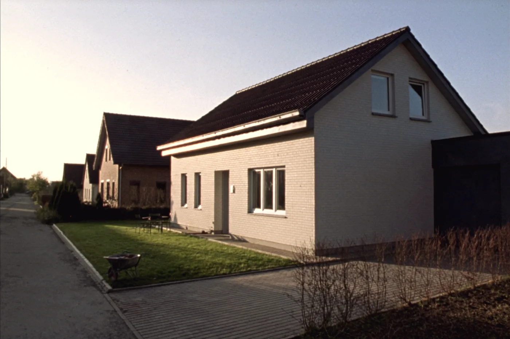

Meistgefragt
Baufinanzierung, Bausparen und Kredit aus einer Hand
Sie haben ein Grundstück, ein Objekt im Blick oder ein Haus, das saniert werden muss. Ich rechne mit Ihnen durch, was tragbar ist, und hole die Angebote mehrerer Banken ein statt eines einzigen. Sie erfahren früh, ob es realistisch ist, und nicht erst nach vier Wochen Funkstille.
Enthalten: Baufinanzierung, Bausparen, Kreditvermittlung, Anschlussfinanzierung, Modernisierungskredit, Energieausweis, Absicherung während der Bauzeit mit Bauherrenhaftpflicht, Bauleistungs- und Feuerrohbauversicherung.
Finanzierung durchrechnen lassen